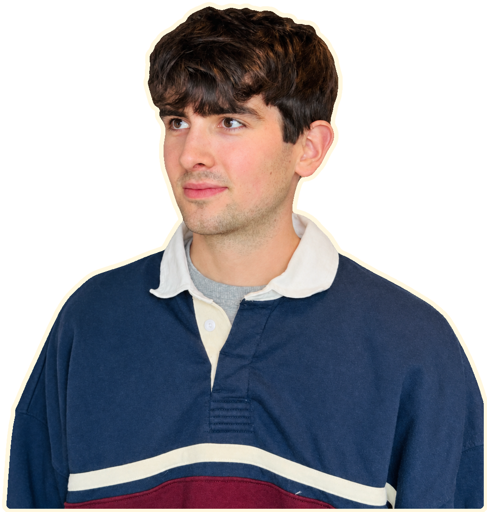

Portfolio · Internship 2027
Computer science student building practical tools with AI assistance, from a stocking assistant coworkers used on shift to interactive learning paths.

Featured · Built at work
Turned photos of product logs into clear stocking instructions using an image-to-text API. Tested on shift with coworkers; their feedback shaped the names, layout, and workflow.
04 · SMS assistant
An SMS assistant that combines email, calendar events, and tasks into a useful morning briefing.
Now
Open to Spring 2027 internships in AI enablement, business analysis or product engineering.
Available03 · Python app
A Python desktop app for managing Active Directory users through PowerShell. Sole application developer; tested in a virtual lab.
About
I'm studying computer science at the University of Southern Maine, graduating in May 2027. I enjoy training people and building systems that make unfamiliar tasks easier to carry out.
02 · Branching lessons
Builds a learning path around your topic. Click unfamiliar concepts to branch into short prerequisite lessons, then return to the main path.
Contact
Let’s talk about practical tools, useful automation, and making unfamiliar tasks easier.
Neill Beaton · 2026